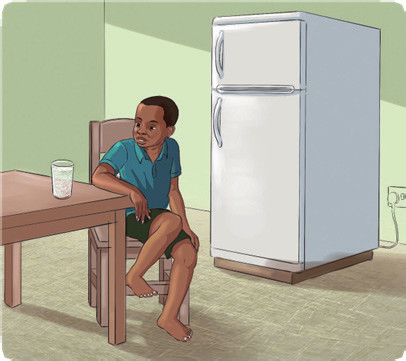
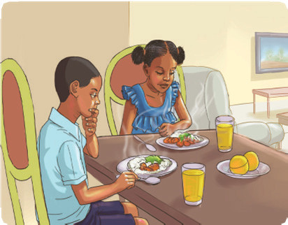

Speaking practice
(a) Making one sentence using ‘tooto’ for each of the following scenarios.
1.
John cannot finish his homework because he is very tired.
2.
Hamisi was very nervous, so he could not speak in front of the class.
3.
Asha cannot become a dancer because she is very shy.
4.
Rehema failed to catch the bus because she woke up very late.
5.
The mango was very high in the tree, so the boy could not pick it.
(b) Look at the pictures and join the provided sentences using ‘too...to’.

The water is very cold. He can’t drink it.
The food is very hot. They can’t eat it.